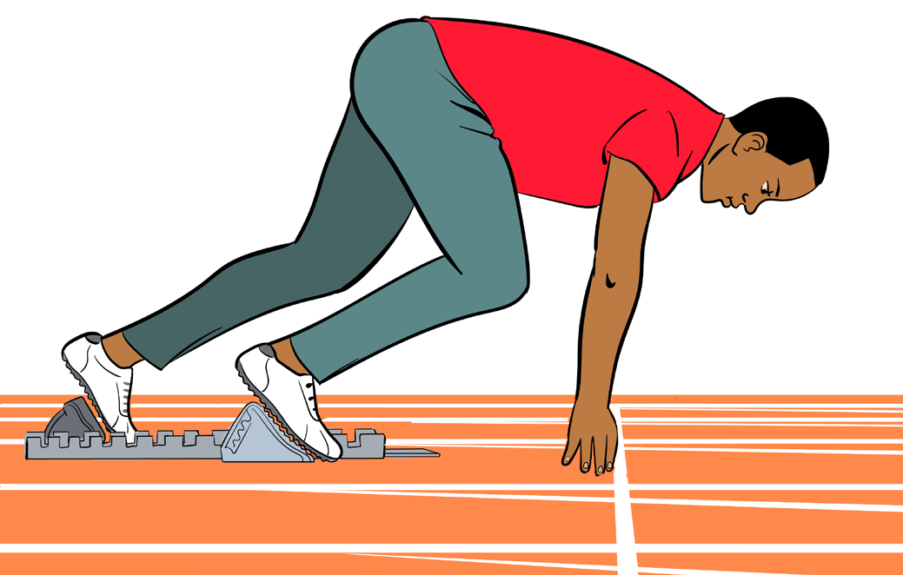
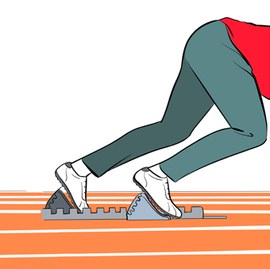

“Set”
During set command, an athlete is required to lift up the body in the starting position. Following this command, the athlete does the following to perform set in starting sprints:
(i) Raise hips by lifting the knee of the rear leg off the ground, as shown in
Figure 5.3;
(ii) Distribute body weight almost evenly over the four supporting areas;
(iii) Head remains in a natural relaxed position; and
(iv) Set an angle of 90o at the front knee and about 110o to 120o at the rear knee.


Figure 5.3: Set position
“Go”
The officials use a pistol or clappers as a “Go” command to let athletes get-off from the starting blocks. After this command the athletes have to do the following actions:
(i) Quickly push-off the leading leg in an approximately horizontal position;
(ii) Drive the rear leg forward into a high knee action;